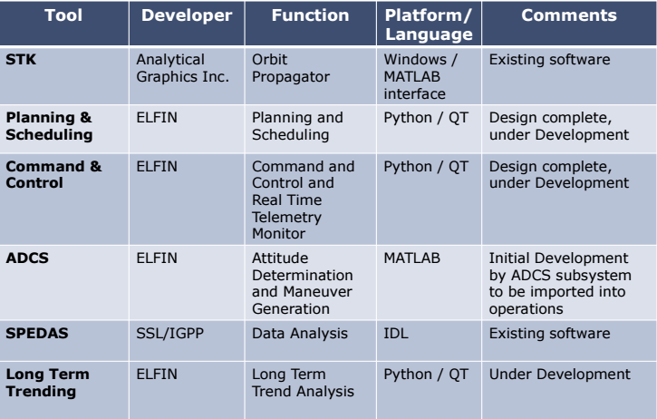
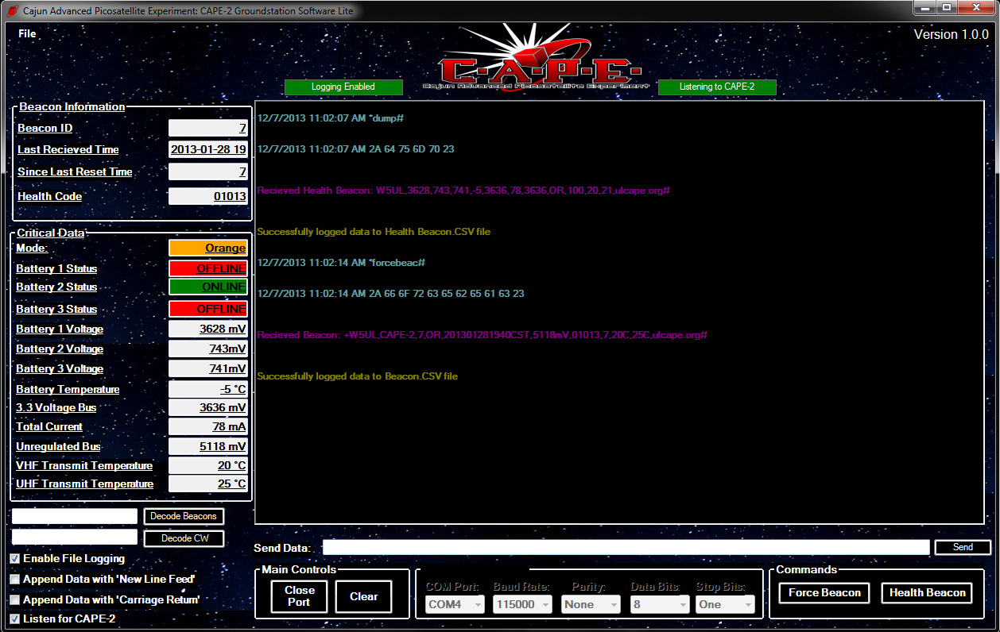

Everything from little experiments to work history.
Developing the software architecture for keeping the ELFIN satellite flying. Currently developing flight procedures and software design for ground based operations. Software we write or use:
Worked with the Rapid Prototyping Team at Applied Minds to build software for a range of public and not so public projects. Forced a wide variety of sensors to cooperate for prototypes written in Python and C++. Built software to operate the ludicrously extreme KiraVan. There was a lot to keep in mind.
Built the commanding and telemetry processing portions of the ground station software for the Cajun Advanced Picosatellite Experiment. Designed a breathtaking (by scientific software tool standards) GUI using Visual C#. Download can be found here.
